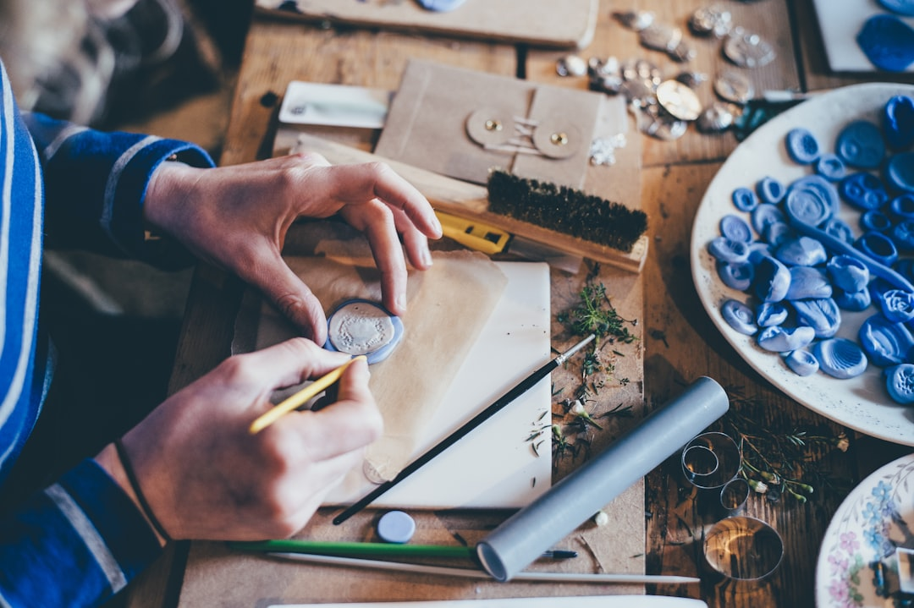
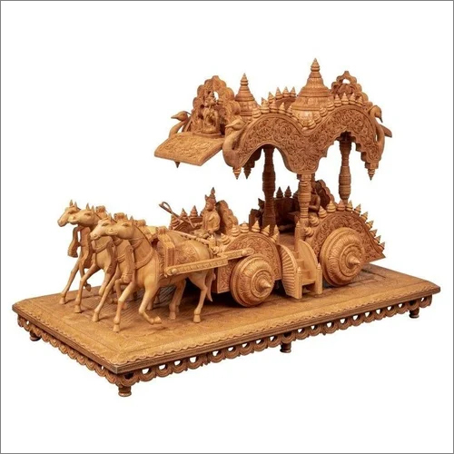
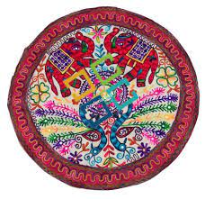
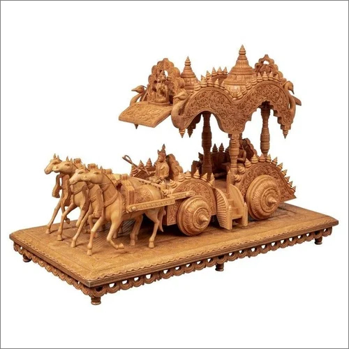
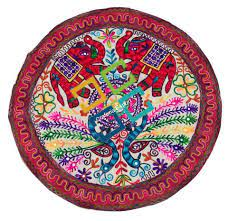

Discover Local Craftsmanship
Karigiri brings together the finest local artisans,
Offering a curated selection of handmade crafts that embody tradition,skill, and creativity.
Welcome to Karigiri, where every item tells a story.
Uncover the vast world of artisanal crafts, handpicked just for you.
From handmade jewelry to bespoke furniture, explore a marketplace that cherishes the art of
craftsmanship.


 


